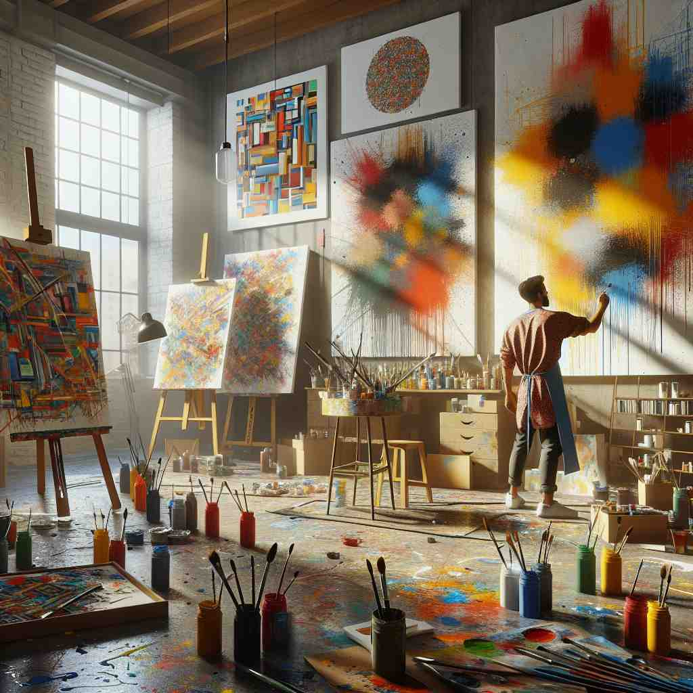

💬 The artist shows his artistic style through the bright colors and abstract forms. 这位艺术家通过明亮的色彩和抽象的形式展示了他的艺术风格。

💬 The woman looks lovely in her vintage style dress. 这位女性穿着复古风格的连衣裙显得非常可爱。
💬 The artist shows his artistic style through the bright colors and abstract forms. 这位艺术家通过明亮的色彩和抽象的形式展示了他的艺术风格。
💬 The woman looks lovely in her vintage style dress. 这位女性穿着复古风格的连衣裙显得非常可爱。
🔈 [staɪl]
💬 She has a unique style of painting. 她有一种独特的绘画风格。
🔍 风格: 比如小明喜欢用鲜艳的颜色画画，而且喜欢画很多圆圈，这就是小明的绘画风格。小花喜欢用柔和的颜色，而且喜欢画很多三角形，这就是小花的绘画风格。就像你搭积木，你喜欢用各种颜色的积木搭出高高的塔，这就是你的搭积木风格。
💬 He dresses in a casual style. 他穿着休闲风格的衣服。
🔍 风格: 比如小明喜欢穿T恤和牛仔裤，这就是休闲风格。小花喜欢穿裙子和皮鞋，这就是另一种风格。就像你玩玩具，你喜欢把玩具摆放得整整齐齐，这就是你的玩具摆放风格。
💬 The house was built in a traditional style. 这栋房子是用传统风格建造的。
🔍 风格: 比如有些房子是用木头和瓦片建造的，有很多雕刻和装饰，这就是传统风格。有些房子是用玻璃和钢铁建造的，形状很奇特，这就是现代风格。就像你画画，你喜欢用蜡笔画五颜六色的画，这就是你的绘画风格。
💬 Her writing style is very clear and concise. 她的写作风格非常清晰简洁。
🔍 风格: 比如小明写作文喜欢用很短的句子，很容易理解，这就是清晰简洁的风格。小花写作文喜欢用很多华丽的词语，这就是另一种风格。就像你说话，你喜欢用简单的词语表达你的意思，这就是你的说话风格。
🧠 “style” 的核心意思是一种独特的方式或形式，它可以指绘画、穿着、建筑、写作等各个方面。
⬅️ manner（方式）、way（方法）、fashion（时尚）： “style” 与 “manner” 和 “way” 都表示做事的方式，但 “style” 更强调独特和个性。“style” 和 “fashion” 都与流行趋势有关，但 “style” 更持久，不局限于一时。
🔀 uniformity（一致性）、sameness（相同）：如果所有东西都一样，就没有 “style” 可言。
🌳 词源上，'style' 取自拉丁语 'stilus'，意义为书写工具，后来引申为写作方式、风格等。没有明显的词根、前缀或后缀。
💡 记忆 'style' 可以通过联想 'stylus'（书写工具）来记忆，想象一种特定的书写风格或个人风格，使其与'风格'的概念联系起来。
🗝️ n. a particular fashion or way of dressing 特定的服装风格或穿衣方式
🎭 在一个时尚展览会上，模特们穿着各具特色的服装在T台上走秀。有的身穿复古风格的服饰，有的选择前卫大胆的设计，充分体现了'style'作为'特定的时尚或穿着方式'的含义。
💬 Her sense of style is always admired. 她的风格总是受到赞赏。
🤔 从表达方式延伸到外表呈现方式
🗝️ n. a way of doing something 做某事的方法
🎭 在一个繁忙的厨房里，两位厨师分别展示他们独特的做菜风格。一个厨师以迅速而精准的刀工著称，而另一个则在于慢工出细活，确保每个菜品的完美。这里展示了'style'作为'做某事的方法'的含义。
💬 I like his management style. 我喜欢他的管理风格。
🤔 从表达方式泛化到行为方式
🗝️ n. elegance and sophistication 优雅与精致
🎭 在一个豪华的晚宴中，女士们身穿优雅的礼服，男士们则穿着考究的西装。整个场合充满了优雅与高贵，完美呈现了'style'作为'优雅与精致'的含义。
💬 She has real style. 她真有风格。
🤔 独特表达方式带来的品质感
🗝️ v. to design or make in a particular form 以特定形式进行设计或制作
🎭 在一个设计工作室里，室内设计师正忙于为客户改造一个房间。她仔细选择家具和色彩搭配，决定以现代简约风格来设计，以此演绎'style'作为'按照特定形式设计或制造'的含义。
💬 Her hair was styled in a modern cut. 她的头发剪成了现代款式。
🤔 赋予某物独特的表现形式
🗝️ v. to call or designate 称呼或指定
🎭 在一个会议室内，经理宣布了一项新项目的具体安排，并正式任命一位同事为项目负责人。她称呼这位同事为该项目的'领导者'，展示了'style'作为'称呼或指定'的含义。
💬 He styles himself as an expert in the field. 他自称是该领域的专家。
🤔 给予某种称呼是一种表达方式